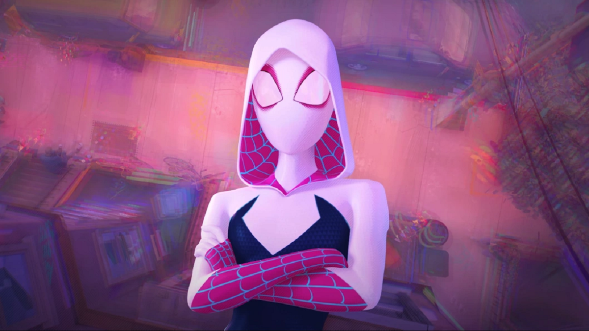
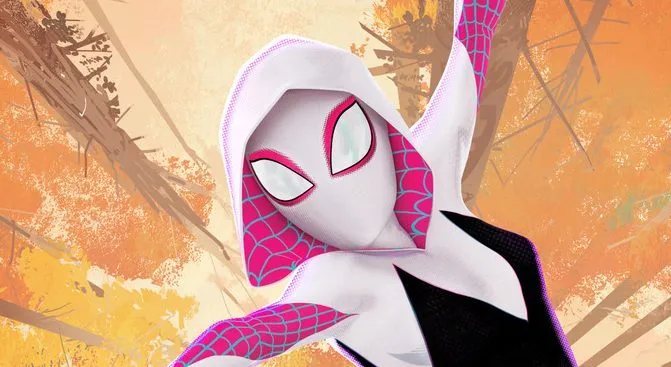

“Don’t do it like me. Do it like you.”
Character Description: Gwen Stacy is a confident, agile Spider-Woman who has faced loss yet continues to fight for justice. She uses her intelligence, acrobatics, and determination to help protect her city and the multiverse.
Abilities
- Wall-Crawling: Can cling to and scale walls.
- Spider-Sense: Detects danger before it happens.
- Enhanced Agility & Reflexes: Extremely fast and nimble.
- Martial Arts: Skilled in hand-to-hand combat.
Relationships
- Miles Morales: Friend and ally in multiverse adventures.
- Peter B. Parker: Collaborator and mentor figure.
- Spider-People across Multiverse: Teammates and friends.
Background
Gwen gained her powers through a radioactive spider bite in her universe. She leads a dual life balancing normal teen challenges and her heroic duties as Spider-Woman.
Fun Facts
- First appeared in Edge of Spider-Verse #2 (2014).
- Also known as Spider-Woman or Spider-Gwen.
- Known for her iconic white, black, and pink costume.